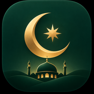

◉
iPhone
Använd NOOR 9.5.5 Webb från hemskärmen.
- Öppna den publicerade webbplatsen i Safari.
- Tryck på Dela (fyrkant med pil).
- Välj Lägg till på hemskärmen.
- Tryck på Lägg till eller välj att öppna som webbapp.

NOOR نور KOSTNADSFRI☾ DIN DAGLIGA BÖNEKOMPASS
NOOR ger dig Shia-bönetider, en personlig oas, bönejournal och illustrerade böneguider i en lugn och vacker upplevelse. På iPhone och Android – helt gratis.
✓ Inget konto behövs · Ingen reklam i webbappen
DIN PERSONLIGA BÖNEAPP
En webbapp som fungerar direkt – ingen butik behövs.
NÄSTA BÖN
Beräknar tider…
Beräknade tider kan skilja sig från den lokala Shia-församlingens kalender.
Riktningen till Kaba i Mecka
från geografiskt norr
Riktningen beräknas efter din plats. Livekompassen kräver stöd i mobilen och tillstånd.
Tasbih Fatima al-Zahra (a.s.) · 100 upprepningar
الله أكبر
Allahu Akbar
Dina upprepningar sparas på mobilen.
Din plats och hur bönetiderna visas.
Platsen sparas bara på enheten. Du kan också välja en stad manuellt.
Ja'fari-inspirerad metod: Fajr 17,7°, Maghrib 4,5°, Isha 14°. Asr beräknas med standard-skuggfaktor. Fajr slutar vid soluppgång.
Detta är en ungefärlig astronomisk beräkning, inte en officiell kalender. Lokala religiösa justeringar kan behövas, särskilt på nordliga breddgrader.
Påminnelser i NOOR fungerar bara när appen är öppen och synlig. Prova ljudet varje gång du öppnar appen. Använd kalendern för påminnelser när NOOR är stängd.
Förvarning visas som text. Ljud kan stoppas när som helst.
Välj en separat NOOR-kalender vid import. Dela filen till din egen e-post och öppna bilagan i Mail om direkt import saknas. Slå på kalenderaviseringar i iPhone-inställningar. Importera en ny period när den gamla löper ut eller om du byter plats; radera tidigare NOOR-kalender först för att undvika dubbla tider. Kalendern använder systemets signal, inte Adhan. Kontrollera tiderna mot din lokala Shia-kalender.
Adhan: Hussein Sobhdel, ljudspår bearbetat till MP3. Original · CC BY-SA 4.0 · Licensinformation.
NOOR samlar det viktigaste i en enkel, personlig upplevelse. Allt du ser här är en fungerande webbversion – inte bara en bild av appen.
GRATIS · INGET APPBUTIKSKONTO
Följ stegen för din mobil. Webbappen fungerar utan Apple Developer- eller Google Play-konto.
Använd NOOR 9.5.5 Webb från hemskärmen.
Använd webbappen direkt eller installera den separata Android-appen.
Vi publicerar APK-filen först när alarmet är testat. Installation utanför Google Play kan ge en säkerhetsvarning.
Observera: Webbversionen har påminnelser när den är öppen och kalenderexport. Den kan inte spela Adhan automatiskt med låst skärm. Uppgifterna lagras lokalt i din webbläsare. Webbplatsen måste först publiceras på en HTTPS-adress innan den kan installeras som webbapp.
DIN DAGLIGA BÖNEFÖLJESLAGARE
NOOR är en kostnadsfri muslimsk böneapp med Shia-inriktning för dig som vill följa bönen i vardagen. Välj en svensk stad eller använd din plats för att se dagens tider enligt en Ja'fari-inspirerad beräkningsmetod.
Se tider för Fajr, Dhuhr, Asr, Maghrib och Isha samt soluppgång. Använd Qibla för riktningen mot Mecka. Tiderna är beräknade uppskattningar; kontrollera med din lokala församling.
Följ illustrerade steg för de fem bönerna och Wudu, med arabiska fraser och uttalsstöd. Läs dua och använd Tasbih Fatima al-Zahra. Guiderna är pedagogiskt stöd och ersätter inte religiös rådgivning.
Registrera böner, följ dina streaks och lås upp dekorationer i din personliga trädgård. Använd även Qada-räknaren, islamisk kalender och fastedagbok. Inget konto behövs för webbappen.
Installera Android-appen från hemsidan eller lägg till webbappen via Safari på iPhone. Webbversionen erbjuder Adhan när den är öppen och kalenderexport för systempåminnelser, men inte ett tillförlitligt Adhan-alarm när skärmen är låst.
Öppna den publicerade NOOR-adressen i Safari, tryck på Dela, välj Lägg till på hemskärmen och bekräfta med Lägg till.
Om alternativet inte syns kan du behöva bläddra i delningsmenyn. NOOR fungerar även utan installation i Safari.